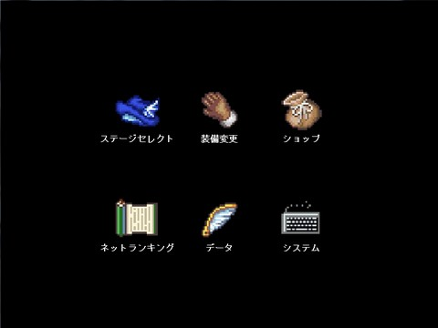

| |

| ２．装備変更 |
| |
ルカの装備を変更するほか、ステータスの確認も行えます。
３．５ 装備変更で詳しく説明します。
|
| ３．ショップ |
| |
ルカの能力を上げる装備アイテムを購入できます。
３．６ ショップで詳しく説明します。
|
| ４．ネットランキング |
| |
ハンドルネーム変更や、ランキングデータ送信ネットランキングを見たりすることができます。
３．７ ネットランキングで詳しく説明します。
|
| ５．データ |
| |
アイテムやモンスターの一覧を見ることができます。
３．８ データで詳しく説明します。
|
| ６．システム |
| |
音量の調整、セーブなどの操作を行います。
３．９ データで詳しく説明します。
|
|